2010年9月29日(水)
旅行３日目はトロムソからベルゲンへ観光拠点を移動します。
ベルゲンの名物はフィヨルド観光ですが、それは４日目のお楽しみに。
それと地名の場所が分かりにくいと思い、簡単な地図を用意してみました。
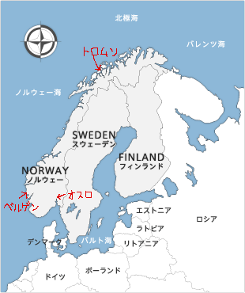
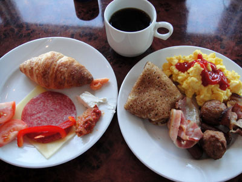
再びホテルの朝食～。
左のお皿の右上にちょこんと乗っかってるのが、
北欧名物(?)のタラコチューブです。
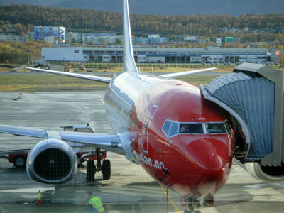
今度はノルウェーの南に位置するベルゲンへ移動します。
赤い機体のノルウェー・エアシャトルがなかなかカッコ良いです。
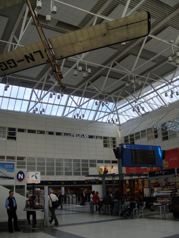
午後にベルゲン空港に到着！
ターミナルの屋根には昔の本に出てきそうな
飛行機が飾られていました。
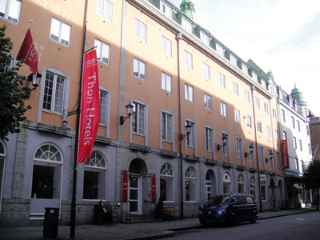
とりあえず宿泊するトーンホテルでチェックインを済ませました。
立派なホテルだこと…。
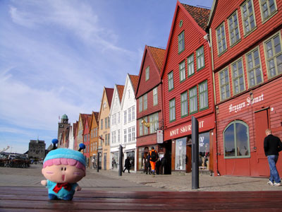
ベルゲンと言えばこの街並み！！
ブリッゲンと呼ばれるこのカラフルな街並みは
ユネスコの世界遺産に登録されています。
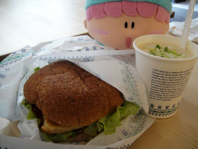
「スープが美味しそうでしゅ～」
お昼はフィッシュバーガーとスープを飲みました。
パンに挟まっていたのは日本で言うところの
かまぼこでした。
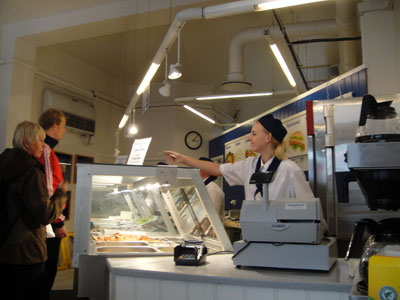
こんな感じのお店です～。
注文するのにいちいち緊張します(^^;。
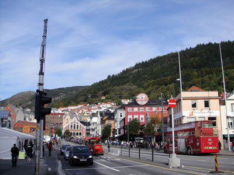
ベルゲンの街並み・その２。
港町らしくにぎやかですね。
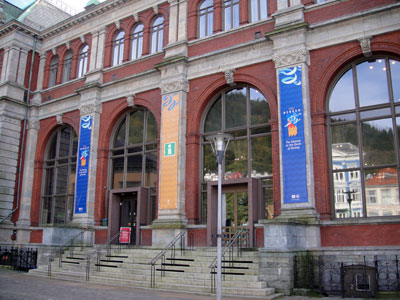
観光案内所も立派すぎる建物です。
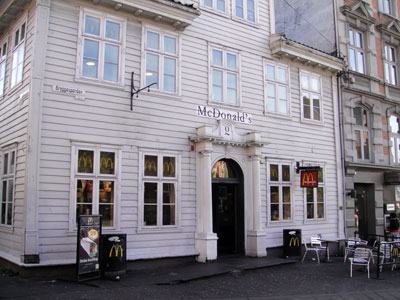
そしてマックもオシャレ！！
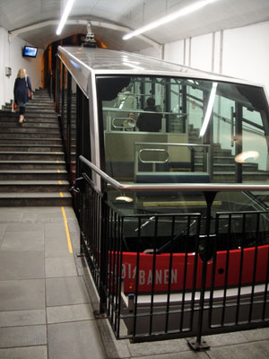
夕方にケーブルカーに乗ってフロイエン山の山頂へ。
車両は新しいですが、１００年以上も前からケーブルカーは
存在していたみたい。
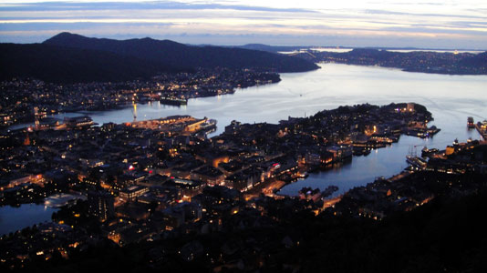
山頂から見たベルゲンの街並みには目を奪われますね。
寒さが厳しかったけれど。。。
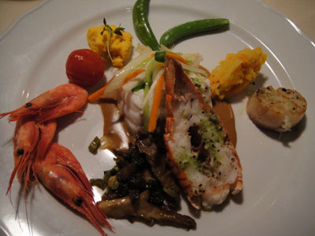
夕食はエンヨーニンゲンというお店でシーフード料理の
コースを食べました。一人5000円くらいで高すぎ…。
2010年9月30日(木)
旅行４日目はこの旅行の目玉とも言えるフィヨルド観光を行います。
見所が多いので、写真がかなりの枚数になってしまいました。
そしてその後は飛行機でスウェーデンへ向かうという超ハードスケジュールを組んでいたりします。
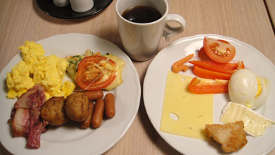
宿泊したトーンホテルでの食事。
毎日同じような食事をしていますね(^^;。
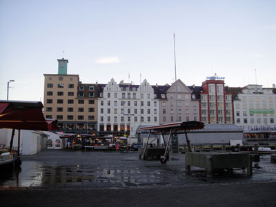
ベルゲンの市場でお昼ご飯を調達。
…と思ったらまだ開いていませんでした。
ガイドブックには７時からと書いてあったのに(T-T)。
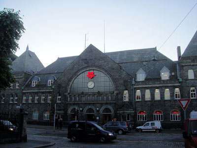
フィヨルド観光のスタート地点となるベルゲン駅。
ターミナルらしく、とても立派な外観ですね。
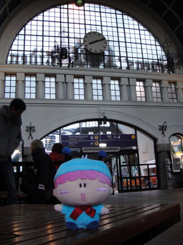
「駅舎の中も立派でしゅ～」
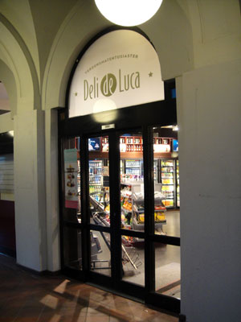
結局お弁当は駅舎の中の売店で買いました。
何を買ったのかはまた後ほど…。
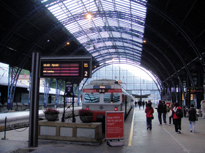
乗り場もまた雰囲気が出ていますね。
ここからヴォスに向けてベルゲン急行で出発します。
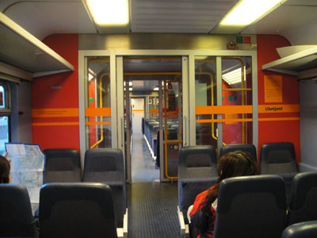
車内は外観からの予想とは異なり、
なかなか新しかったです。
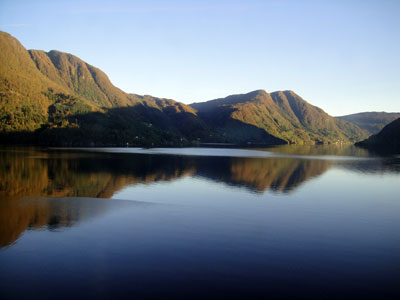
車窓からこんな美しい景色が！！
景色が鏡のように反射してます。
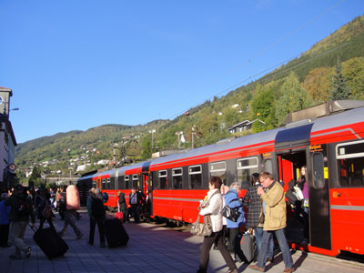
ヴォス駅に到着～。
降りた人たちは皆フィヨルド観光が目的のようです。
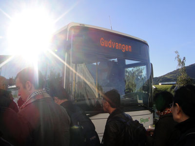
ヴォスからはバスでフェリー乗り場の
グドヴァンゲンへ向かいます。
バスは超満員でした(^◇^;)。
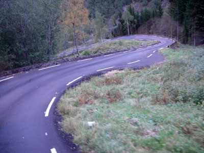
バスは途中こんな険しい道を通っていきます。
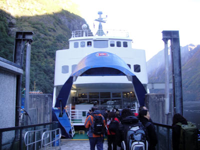
グドヴァンゲンからいよいよフェリーへ。
このフェリー乗り場はめちゃくちゃ寒かった…。
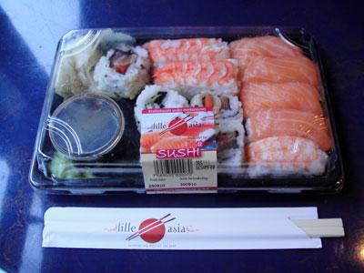
駅で買った問題のお弁当(笑)。
一見普通のお寿司に見えるけど、ご飯が酢飯じゃない
寿司はお寿司と呼べないっ！
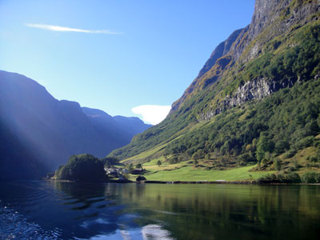
これぞフィヨルド！
氷河で覆われていた時代に、氷河が地面を削ってこのような
深いU字谷が形成されたそうです。
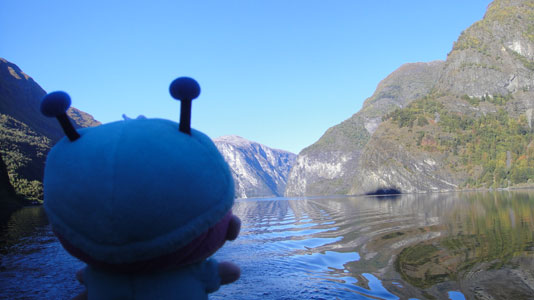
「Nice boat.でしゅ」
（船は写っていないけど）
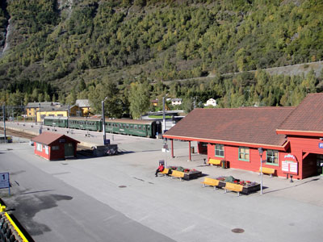
フェリーはフロム駅に到着～。
まるでNゲージのジオラマみたいな光景です。
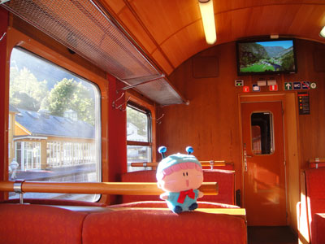
フロム鉄道の車内にて。
観光客向けに車内はとてもきれいでした。
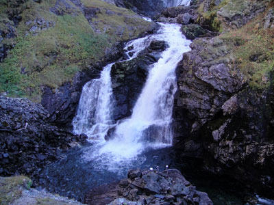
途中に「ショースの滝」という名所で電車は数分停車します。
（撮影タイム）
ガイドブックで見た写真よりも水の量が少ないような…。
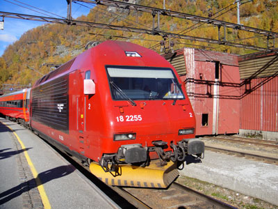
フロム鉄道はミュルダール駅に到着。
再びベルゲン急行に乗り、ベルゲンへと戻ります。
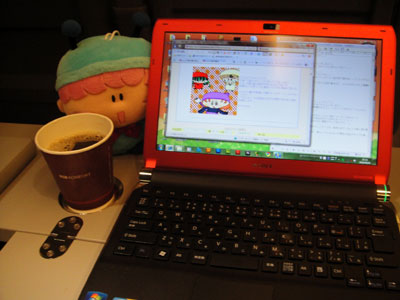
ベルゲン急行ではグリーン車相当の座席を予約し、
コーヒーなどが飲み放題になっていました。
「コーヒー飲みながらゆっくりレスするでしゅ」
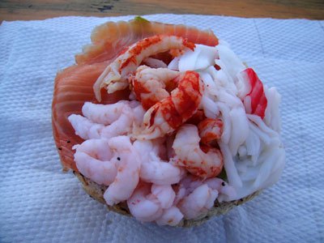
朝は開いていなかった市場で、シーフードの乗った
パンを食べました。
う～ん、ちょっと海老が私の口に合いませんでした。。。
(2010/10/8)